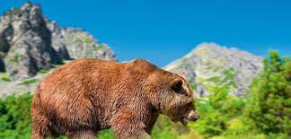
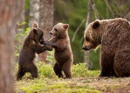
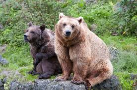

Sierść niedźwiedzia brunatnego ma barwę ciemnobrązową, choć u niektórych podgatunków może być jaśniejsza. W pozycji wyprostowanej Ursus arctos mierzy – w zależności od płci – od 1,8 do 3 m. Masa ciała poszczególnych osobników waha się między 80 a 780 kg. Niedźwiedzica wydaje na świat co dwa lata dwoje-troje młodych. Ciąża trwa około 8 miesięcy. Poród następuje zwykle między grudniem a lutym. Długość życia wynosi do 30–40 lat w stanie dzikim, do 50 lat w niewoli. Jest wszystkożerny; żywi się nasionami, grzybami, dżdżownicami, ślimakami, jajami ptaków, miodem, poluje także na zwierzynę leśną, łowi też ryby. Środowisko życia stanowią puszcze, tajga oraz zalesione rejony górzyste.
Niedźwiedź brunatny ma duże, masywne ciało z nieznacznie wydłużoną głową, szyję grubą i krótką, ogon krótki i niewidoczny wśród okrywy włosowej. W trakcie chodzenia na podłożu stawia całą stopę[6]. Dane liczbowe niedźwiedzia brunatnego podgatunku nominatywnego (U.a. arctos): Długość tułowia z głową: samiec 160–280 cm, samica 150–210 cm Ogon: 6,5–21 cm[5] Wysokość w kłębie: 0,90–1,5 m[5] Masa ciała: w optymalnych warunkach samce średnio 389 kg, samice średnio 207 kg[5]
 